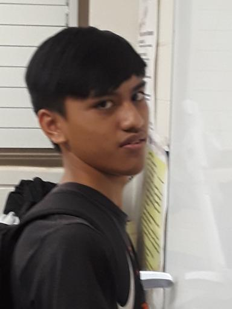

 My name is Jalen Jay Dagdagan and I am currently a sophmore at James Campbell High School. I attended Ewa Elementary School and Ewa Makai Middle School. At Ewa Makai, I did simple programming for the Vex Robotics Cortex. This website is an AP Computer Science Principles Project. On here is an about me page, a work portfolio of all other projects completed in this class, and a extra page to do anything we wanted on. I like to play games on my Xbox One or watch Youtube in my freetime. In the future, I plan on becoming a Software Engineer.